← 概率资料目录考点 31 · 古典概型 · 练习
资料来源：学科网一轮复习笔记 · 共 16 题
第 1 题
1．下列有关古典概型的四种说法：
①试验中所有可能出现的样本点只有有限个；
②每个事件出现的可能性相等；
③每个样本点出现的可能性相等；
④已知样本点总数为 ，若随机事件
包含
，若随机事件
包含 个样本点，则事件
发生的概率.
个样本点，则事件
发生的概率.
其中所正确说法的序号是（ ）
查看答案与解析
【答案】D
【解析】②中所说的事件不一定是样本点，所以②不正确；根据古典概型的特点及计算公式可知①③④正确.故选:D.
第 2 题
1．在
年初抗击新冠肺炎疫情期间，某医院派出了 名医生和包括甲、乙、丙在内的
名医生和包括甲、乙、丙在内的 名护士前往武汉参加救治工作.现从这
人中任意抽取
名护士前往武汉参加救治工作.现从这
人中任意抽取 名医生、
名护士组成一个应急小组，则甲、乙、丙这
名护士至少选中
名医生、
名护士组成一个应急小组，则甲、乙、丙这
名护士至少选中 人的概率为（
）
人的概率为（
）
查看答案与解析
【答案】B
【解析】由题意可知，这
人中任意抽取
名医生、
名护士组成一个应急小组，且甲、乙、丙这
名护士至少选中
人的选法种数为，
因此，所求概率为.故选：B.
第 3 题
2．从数字1，2，3，4，5中任取三个数字，组成没有重复数字的三位数，则这个三位数大于400的概率是(
)．
查看答案与解析
【答案】A
【解析】由题得总的三位数个数为,这个三位数大于400的个数为,
所以由古典概型概率得
故答案为A
第 4 题
3．甲、乙两人参加“社会主义价值观”知识竞赛，甲、乙两人的能荣获一等奖的概率分别为 和
和 ，甲、乙两人是否获得一等奖相互独立，则这两个人中恰有一人获得一等奖的概率为（
）
，甲、乙两人是否获得一等奖相互独立，则这两个人中恰有一人获得一等奖的概率为（
）
A．
B．
C．
D．
查看答案与解析
【答案】D
【解析】设甲、乙获一等奖的概率分别是，不获一等奖的概率是，则这两人中恰有一人获奖的事件的概率为：，应选答案D。
第 5 题
4．袋子里装有编号分别为“
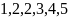
”的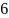
个大小、质量相同的小球，某人从袋子中一次任取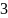
个球，若每个球被取到的机会均等，则取出的
个球编号之和大于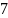
的概率为（
）
查看答案与解析
【答案】B
【解析】由题设取三个球的所有可能有
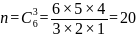
，其中编号之和小于或等于7的所有可能有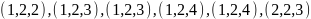
共6种，其概率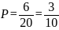
，所以
个球编号之和大于
的概率为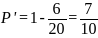
，应选答案B。
第 6 题
5．《九章算术》中有一分鹿问题：“今有大夫、不更、簪袅、上造、公士，凡五人，共猎得五鹿.欲以爵次分之，问各得几何.”在这个问题中，大夫、不更、簪袅、上造、公士是古代五个不同爵次的官员，现皇帝将大夫、不更、簪枭、上造、公士这5人分成两组（一组2人，一组3人），派去两地执行公务，则大夫、不更恰好在同一组的概率为（
）
A．

B．

C．
D．
查看答案与解析
【答案】B
【解析】皇帝将大夫、不更、簪枭、上造、公士这5人分成两组(一组2人，一组3人)，派去两地执行公务，
基本事件总数，
大夫、不更恰好在同一组包含的基本事件个数，
所以大夫、不更恰好在同一组的概率为
．
故选：B．
第 7 题
6．在明代珠算发明之前，我们的先祖从春秋开始多是用算筹为工具来记数、列式和计算.算筹实际上是一根根相同长度的小木棍，如图，是利用算筹表示数1~9的一种方法，例如：47可以表示为“
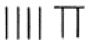
”，如果用算筹表示一个不含“0”且没有重复数字的三位数，这个数至少要用8根小木棍的概率为（
）
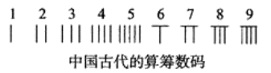
查看答案与解析
【答案】D
【解析】至少要用8根小木根的对立事件为用掉5根，6根，7根这三种情况，
用5根小木棍为1、2、6这一种情况的全排列，
6根有123，127，163，167这四种情况的全排列，
7根有124，128，164，168，137，267，263这七种情况的全排列，
故至少要用8根小木根的概率为.故选:D.
第 8 题
7．有一个质地均匀的正四面体木块 个面分别标有数字.将此木块在水平桌面上抛两次，则两次看不到的数字都大于
的概率为__________．
个面分别标有数字.将此木块在水平桌面上抛两次，则两次看不到的数字都大于
的概率为__________．
查看答案与解析
【答案】
【解析】由题意得，将此木块在水平桌面上抛两次看不到的数字共有
种情况，其中两次看不到的数字都大于
的情况有，共4种．由古典概型概率公式可得所求概率为
．
答案：
第 9 题
8．某校开设5门不同的选修课程，其中3门理科类和2门文科类，某同学从中选修2门课程，则该同学恰好选中1文1理的概率为________.
查看答案与解析
【答案】
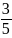
【解析】某校开设5门不同的选修课程，其中3门理科类和2门文科类，
某同学从中选修2门课程，基本事件总数n＝
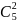
＝10，
该同学恰好选中1文1理包含的基本事件总数m＝
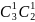
＝6．
∴该同学恰好选中1文1理的概率p＝
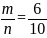
＝
．
故答案为：
．
第 10 题
9．从1，2，3，4，5这5个数中一次性随机地取两个数，则所取两个数之和能被3整除的概率是（
）
查看答案与解析
【答案】A
【解析】从1，2，3，4，5这5个数中一次性随机地取两个数，共有10种取法，其中所取两个数之和能被3整除包含
四种取法，所以概率为，选A．
第 11 题
10．已知函数
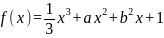
，若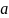
是从1，2，3三个数中任取的一个数，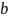
是从0，1，2三个数中任取的一个数，则该函数有两个极值点的概率为（
）
查看答案与解析
【答案】D
【解析】将
记为横坐标，将
记为纵坐标，可知总共有
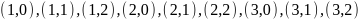
9个的结果，而函数有两个极值点的条件为其导函数有两个不相等的实根，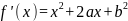
，满足题中条件为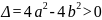
，即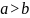
，所以满足条件的基本事件有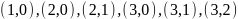
共6个基本事件，所以所求的概率为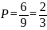
，故选D．
第 12 题
11．执行如图所示的程序框图，设输出数据构成集合，从集合
中任取一个元素 ，则事件“函数
在
上是增函数”的概率为(
)
，则事件“函数
在
上是增函数”的概率为(
)
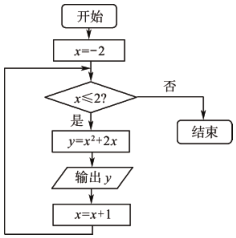
查看答案与解析
【答案】C
【解析】当；
当；
当；
当；
当；
当，退出循环.
所以，
又函数
在
上是增函数，所以.
函数
在
上是增函数的概率为.故选：C.
第 13 题
1．某校疫情期间“停课不停学”，实施网络授课，为检验学生上网课的效果，高三年级进行了一次网络模拟考试.全年级共1500人，现从中抽取了100人的数学成绩，绘制成频率分布直方图（如图所示）.已知这100人中[110，120）分数段的人数比[100，110）分数段的人数多6人.
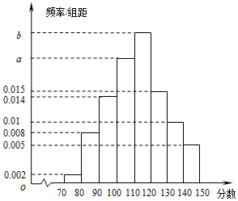
（1）根据频率分布直方图，求a，b的值；并估计抽取的100名同学数学成绩的平均数（假设同一组中的每个数据可用该组区间的中点值代替）；
（2）现用分层抽样的方法从分数在[130，140），[140，150]的两组同学中随机抽取6名同学，从这6名同学中再任选2名同学作为“网络课堂学习优秀代表”发言，求这2名同学的分数恰在同一组内的概率.
查看答案与解析
【答案】（1）a＝0.020，b＝0.026，112；（2）.
【解析】（1）依题意a+b＝0.046，100×10×（b﹣a）＝6，
解得a＝0.020，b＝0.026，
平均数为：
整理得平均数为112
（2）设“抽取的2名同学的分数恰在同一组内”为事件A
由题意，在分数为[130，140）的同学中抽取4人，分别用a1，a2，a3，a4表示，
在分数为[140，150]的同学中抽取2人，分别用b1，b2表示，
从这6名同学中抽取2人所有可能出现的结果有：（a1，a2），（a1，a3），（a1，a4）（a1，b1），（a1，b2），（a2，a3），（a2，a4），（a2，b1），（a2，b2），（a3，a4），（a3，b1），（a3，b2），（a4，b1），（a4，b2），（b1，b2）共15种，
抽取的2名同学的分数恰在同一组内的结果有：（a1，a2），（a1，a3），（a1，a4），a2，a3），（a2，a4），（a3，a4），（b1，b2），共7种，
所以，抽取的2名同学的分数不在同一组内的概率为.
第 14 题
2．从某企业生产的某种产品中抽取100件，测量这些产品的质量指标值，由测量结果得到如图所示的频率分布直方图，质量指标值落在区间，，
内的频率之比为.
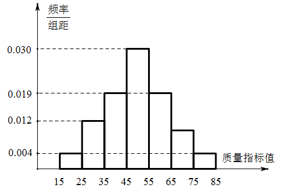
（1）求这些产品质量指标值落在区间
内的概率；
（2）用分层抽样的方法在区间
内抽取一个容量为6的样本，将该样本看成一个总体，从中任意抽取2件产品，求这2件产品都在区间
内的概率．
查看答案与解析
【答案】（Ⅰ） ；（Ⅱ）
．
；（Ⅱ）
．
【解析】（Ⅰ）设区间
内的频率为 ，
，
则区间，
内的频率分别为
和
．
依题意得，
解得
．
所以区间
内的频率为
．
（Ⅱ）由（Ⅰ）得，区间，，
内的频率依次为， ，
， ．
．
用分层抽样的方法在区间
内抽取一个容量为6的样本，
则在区间
内应抽取
件，记为，，
．
在区间
内应抽取
件，记为 ，
．
，
．
在区间
内应抽取
件，记为 ．
．
设“从样本中任意抽取2件产品，这2件产品都在区间
内”为事件M，
则所有的基本事件有：，，，，，，
，，，，，，，，，共15种．
事件M包含的基本事件有：，，，，，
，，，，，共10种．
所以这2件产品都在区间
内的概率为
．
第 15 题
3．2020年2月份，根据新型冠状病毒的疫情情况，教育部下达了延迟开学的通知.由此使得全国中小学生停课，影响了教学进度，某高中按照“停课不停学”的原则，扎实开展停课不停学的工作，特制定了网上授课和微课自学相结合的学习方式进行教学，某学校随机调查了 名学生每天使用微课学习情况，进行抽样分析，并得到如图所示的频率分布直方图.
名学生每天使用微课学习情况，进行抽样分析，并得到如图所示的频率分布直方图.
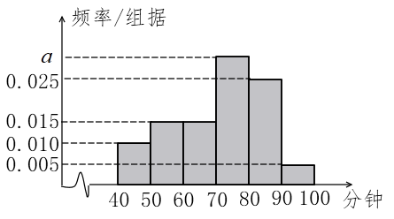
(1)估计这
名学生每天使用微课学习时间的中位数（结果保留一位小数)；
(2)为了进一步了解学生的学习情况，按分层抽样的思想，从每天使用微课学习时间在 分钟的学生中抽出
分钟的学生中抽出 人，再从
人中随机抽取
人，试求抽取的
人中恰有一人来自使用微课学习时间在
人，再从
人中随机抽取
人，试求抽取的
人中恰有一人来自使用微课学习时间在 分钟的概率.
分钟的概率.
查看答案与解析
【答案】(1)；(2).
【解析】(1))由，得.
设中位数为，则根据直方图可知，
所以，
所以，即中位数为.
(2)由频率分布直方图中可求得每天使用微课学习时间在
分钟的学生人数为
人，
所以按分层抽样的方法抽出5人时，时间在
分钟的人数有2人，记为；
时间在
分钟的人数有3人，记为，
则任选
人共有
 种情况，
种情况，
而恰有一人来自使用微课学习时间在
分钟共有
种情况，
故抽取的
人中恰有一人来自使用微课学习时间在
分钟的概率为.
第 16 题
4．2020年新冠肺炎疫情期间，某区政府为了解本区居民对区政府防疫工作的满意度，从本区居民中随机抽取若干居民进行评分（满分100分）.根据调查数据制成如下表格和频率分布直方图.已知评分在 的居民有600人.
的居民有600人.
满意度评分
|

|

|

|

|
满意度等级
|
不满意
|
基本满意
|
满意
|
非常满意
|
（1）求频率分布直方图中a的值及所调查的总人数；
（2）定义满意度指数
（满意程度的平均分）/100，若，则防疫工作需要进行大的调整，否则不需要大调整.根据所学知识判断该区防疫工作是否需要进行大调整？（同一组中的数据用该组区间的中点值为代表）；
（3）为了解部分居民不满意的原因，从不满意的居民（评分在、 ）中用分层抽样的方法抽取6名居民，倾听他们的意见，并从6人中抽取2人担任防疫工作的监督员，列出抽取的所有基本事件并求这2人中仅有一人对防疫工作的评分在
内的概率.
）中用分层抽样的方法抽取6名居民，倾听他们的意见，并从6人中抽取2人担任防疫工作的监督员，列出抽取的所有基本事件并求这2人中仅有一人对防疫工作的评分在
内的概率.
查看答案与解析
【答案】（1） ，
， ；（2），该区防疫工作不需要大的调整；（3）
；（2），该区防疫工作不需要大的调整；（3）
【解析】（1）由频率分布直方图得：
，解得.
设总共调查
人，则，解得.
故总共调查
人.
（2）由频率分布直方图知：
，所以该区防疫工作不需要大的调整.
（3），，抽样比，
抽取
人，设为，
抽取
人，设为.
从
人中抽取
人共有： ，
， ，，，
，，， ，，，，
，，，，
 ，，
，， ，，，，
，，，， ，
， 个基本事件.
个基本事件.
2人中仅有一人对防疫工作的评分在
内的有，，，，
，，，， 个基本事件.
个基本事件.
故这2人中仅有一人对防疫工作的评分在
内的概率.